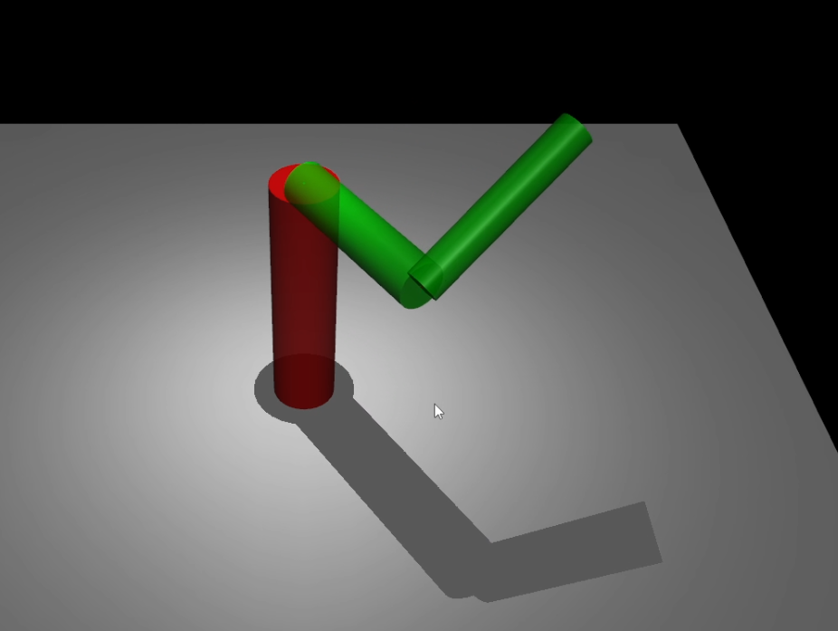

My Projects

FIRST Robotics
I participated in FIRST Robotics for nine years, from 4th grade through high school, an experience that had a major impact on my development as an engineer. Through the program, I learned how to brainstorm and refine design ideas, collaborate on engineering teams, and use CAD to model mechanical systems. In high school, as part of the FRC league, I worked with over ten other designers to collaboratively CAD our team’s competition robot. I also co-founded a sub-team called General Programming and led the development of our first electronic scouting system, which introduced automation into our data collection process and improved our competition strategy. Below is more information about each of the programs I participated in.
FIRST LEGO League
I participated in FIRST Lego League (FLL) from 4th to 8th grade and learned the basics of robotics and block programming.

FIRST Tech Challenge
Competed in FTC for 3 years, focusing on mechanical design and programming.

FIRST Robotics Competition
Competed in FRC for 3 years, leading a sub-team and developing our first electronic scouting system.

Design Project I: All terrain trailer
During my first design class I designed, fabricated, tested, iterated, and documented a solution to the given challenge. The challenge was to design a trailer that can transport a 5.5lb payload across an uneven course. The key constraint was that the payload must be balanced on the top of the solution. Below you can see my final design and explore more of the details of this project.
Robotics: Furuta Pendulum Kinematics
In my first robotics project my partner and I worked together to analyze and simulate the kinematics of a Futura Pendulum using analytical and software methods. We derived and evaluated formulas with code, modeled the pendulum with MuJoCo, (A python library) and verified analytical results using the model. Below is an image of our simulated pendulum and a video of the simulation. Click the button to see reports, code, and more details.
Image of simulation
Video Demonstration
A video showcasing the prototype in action.
Robotics: Localization
In my second robotics project, my partner and I implemented a Mahony filter to estimate orientation using data from a phone's IMU. We treated gravity and the Earth's magnetic field as noisy landmarks and used gyroscope data and bias correction to filter the signal. We also explored the TRIAD algorithm, each developing our own variations, and visualized the results using MuJoCo. Below is a video of the Mahony filter in action. Click the button to see the report, code, and project instructions.
Video Of Simulation
A video showcasing the results of the filter on some data we collected.
Robotics: DH-Kinematics
In this project, I analyzed the forward and inverse kinematics—both position and velocity-level—for a 6-DOF robot arm, the NexCOM miniBoT. Using analytical methods and the Denavit-Hartenberg convention, I developed closed-form solutions, including a fast inverse kinematics function that returns multiple solutions. I also implemented an animation system that uses inverse kinematics to follow a path. Below is a visual of the robot arm, the animation, click the button to see the full report, code, and project details.